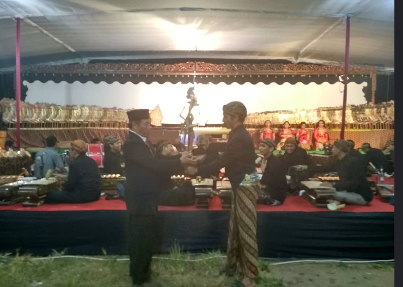
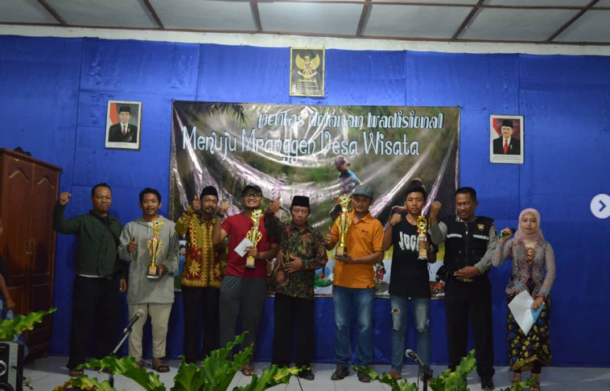
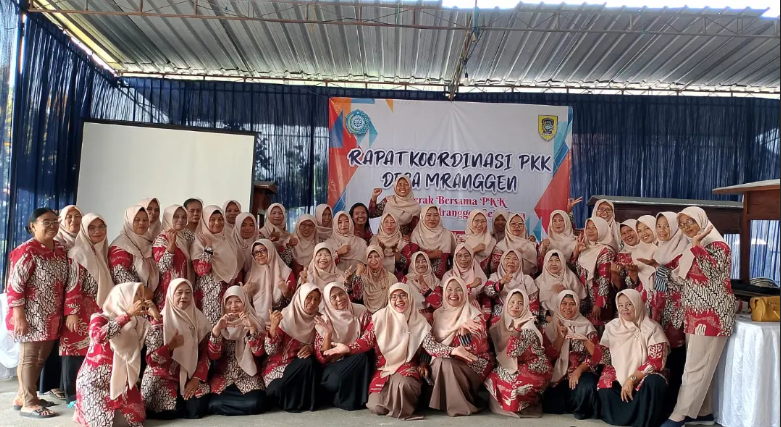

Selamat Datang di Website Kelurahan Mranggen
Desa yang maju, bersatu, dan berdaya — mewujudkan masyarakat sejahtera di tengah alam yang lestari.
5.129
PENDUDUK
1.758
KEPALA KELUARGA
17
DUSUN
270 Ha
LUAS WILAYAH
Profil Desa
Desa Mranggen menurut cerita adalah berasal dari kata Marangi yang artinya mencuci atau membersihkan dan Nggen yang artinya tempat. Konon Desa Mranggen adalah merupakan tempat atau Desa yang digunakan untuk tempat mencuci atau membersihkan pusaka utamanya keris. Pada jaman kerajaan dulu di Desa Mranggen ada seorang Kyai yang bernama Kyai Mranggi yang menurut cerita para sesepuh mempunyai pekerjaan sebagai seorang yang suka membersihkan atau mencuci benda-benda pusaka kerajaan utamanya berupa keris. Karena kepiaweannya Kyai Mranggi terkenal sampai ke keraton Surakarta dan Yogyakarta, untuk mengabadikan namanya tersebut maka tempat Kyai Mranggi tinggal disebut Desa Mranggen.
Mayoritas warga Mranggen rata-rata bermata pencaharian sebagai petani, dan pedagang.
Kelurahan Mranggen berkomitmen membangun desa yag mandiri, dan berkelanjutan dengan memanfaatkan potensi alam, budaya, dan kebersamaaan masyarakat.
| Kepala Desa | Sutarman |
| Kecamatan | Jatinom |
| Kabupaten | Klaten |
| Provinsi | Jawa Tengah |
| Kode Pos | 57481 |
| Luas Wilayah | 270 Hektar |
| desamranggen17@gmail.com |
Foto Desa
UMBUL KROMAN
WATU SIGONG
Foto Event Dan Kegiatan Desa

DOKUMENTASI LOMBA KEUNIKAN BAJU
PEMBUKAAN WAYANGAN OLEH PAK KEPALA DESA


DOKUMENTASI PENTAS SENI ANTAR DESA
IBU-IBU PKK
Lokasi Desa Mranggen
✦ BERKAS RESMI
Pusat Unduhan
Flyer Desa Mranggen 2026
Flyer Desa Mranggen mengenai waktu, tempat, dan perlombaan.
JPG 📥 Unduh Flyer{kind=link}